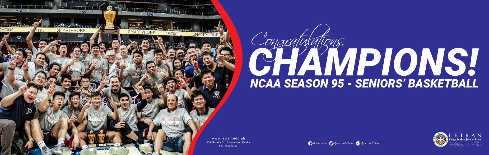

News
Nursing Department, July 17 ,2021
Kudos to the School of Nursing for achieving a 100% passing percentage in the July 2021 Nursing Board Examination! Congratulations, to our new Letranite nurses! You make us proud! #ArribaLetran #LetranCalamba #discoveryourfuturewithletran
Letran Basketball , Nov 19 ,2019
THE CROWN IS BACK TO THE WALLS!
COLEGIO DE SAN JUAN DE LETRAN KNIGHTS ARE YOUR NCAA SEASON 95 MEN’S BASKETBALL CHAMPIONS!
They won against the fierce San Beda Red Lions with a score of 79 to 81, Kudos Red Lions for an amazing season!
What a great way to celebrate our 399th Founding Anniversary. See you next year as we host the NCAA Season 96!
Award for Excilence
Letran Calamba, Nov 21, 2016

Colegio de San Juan de Letran Calamba, a Catholic Dominican institution located in Calamba City, Laguna, is recognized as an exemplary educational institution of world class quality performance. It won Best in Class in the 2016 Global Performance Excellence Award (GPEA) and is a recipient of the Philippine Quality Award (PQA) Recognition for Commitment to Quality Management for the PA 18th Award Cycle.
9TH SUPPLIER'S CONVENTION AWARDS
Letran Calamba, Jun 9, 2016
Phoenix Educational Systems Inc. has been acknowledged by Colegio de San Juan de Letran Calamba. On their 9th Supplier's Convention, “Supplier of the Year” is awarded to Phoenix Education Systems, Inc. in recognition for being an outstanding partner supplier in education. An Excellent Rating of Suppliers Evaluation certificate is also given to Phoenix Educational Systems Inc. for achieving an Excellent Rating gathered on Supplier's Evaluation for Academic Year 2015-2016 prepared by Management Accounting and Finance Services Department.